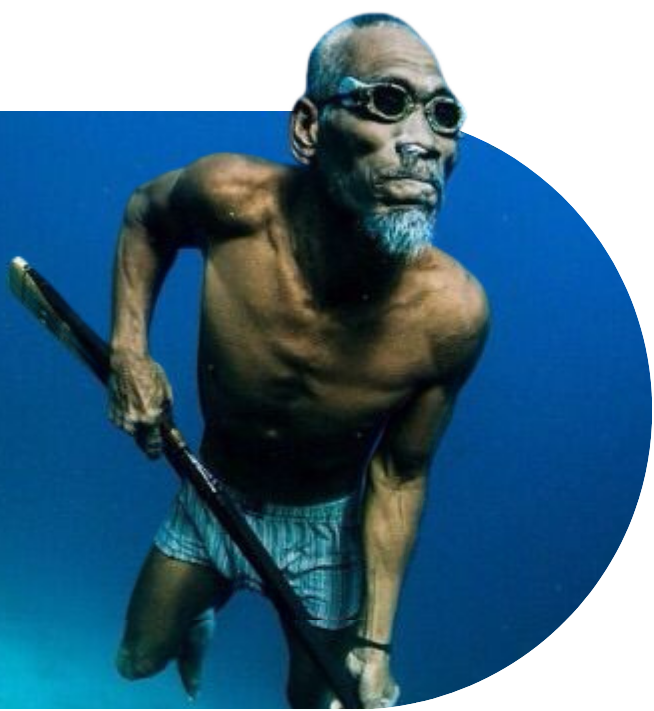
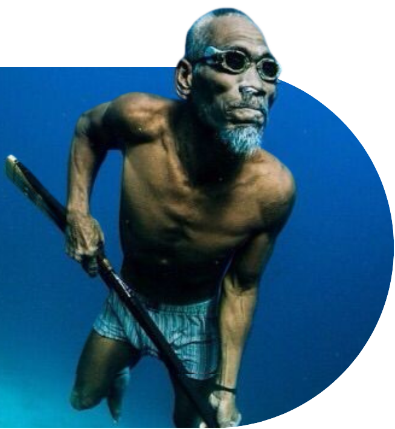

Pusaka
Preserved Unseen Societies And Kinship Anciently
Indonesia, dengan kekayaan sejarah dan tradisinya, membuka pintu rahasia kehidupan melalui berbagai suku yang mendiami kepulauan ini. Inilah perjalanan penjelajahan yang mengungkap keunikan dan keajaiban empat suku Indonesia, sebuah perjalanan yang membius dan mempesona dengan cerita hidup, warisan budaya, dan keindahan spiritual.

 
